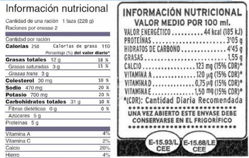

Nuestro manual. Pág. 81.
Encargar a los alumnos, etiquetas de envases de refresco, jugos, galletas, verduras u otros productos. Reunidos en el salón
y con su material, contestar las preguntas siguientes:
¿De qué producto son?, ¿Qué información contienen?, ¿Todos mencionan los mismos valores?, ¿Tienen los mismo
nutrientes?
Reunir en equipos a los alumnos para que compartan las etiquetas y las clasifiquen de acuerdo al producto: cereales,
bebidas, golosinas, etc. Ellos deben encontrar una característica en común de las etiquetas.
Mostrar a los alumnos dos etiquetas como las siguientes para hacer una comparación y preguntar información sobre ellas.
Pueden imprimirse, copiarse en cartulina o proyectarse según sus posibilidades:

Preguntar a los alumnos: ¿qué tipo de producto son?, ¿tiene los mismos nutrientes y valores?, ¿cómo podemos saber si es
líquido o sólido?, ¿cuál de ellos tiene mayor caloría?
Reunidos en equipo y con las etiquetas clasificadas, solicitar a los alumnos que redacten preguntas como las anteriores para
identificar información relevante. Hacer al menos 5 preguntas por equipo.
Compartir sus preguntas y darles solución.
Revisar el desafío #33 donde los alumnos deberán interpretar y usar información explicita e implícita contenida en las
tablas que se muestran en el libro. Contestar las preguntas con un compañero.
Realizar las operaciones necesarias en la libreta para hacer los cálculos en gramos, calorías, mililitros, etc. Socializar las
respuestas en grupo.